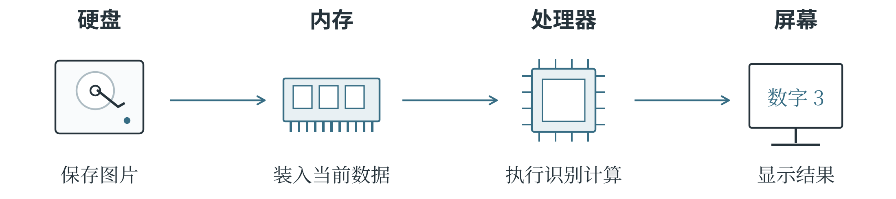

1.3 算法、算力与计算机
数据、算法和算力通常被称为人工智能的三大要素。数据提供材料，算法规定处理材料的方法，算力让计算真正执行起来。仍以训练图像识别模型为例：图片是学习材料，训练算法规定怎样根据图片调整模型，处理器负责完成运算。材料不合适，模型可能学不到有用的规律；方法不合适，有了好材料也未必学得好；计算资源不足，训练可能太慢，甚至无法运行。三者需要配合，才能把任务完成。
算法与程序
算法是为完成规定任务而设计的一组明确步骤。每一步做什么，遇到不同情况怎么办，都需要说清楚，并且能够在有限步骤内得到结果。比如，要从一组至少包含一个数的数据中找出最大值，可以先把第一个数记为“当前最大值”，然后逐个比较后面的数，遇到更大的就更新记录。对 17、23、19、26 这组数来说，记录先是 17，随后变成 23；遇到 19 时不变，最后变成 26。所有数比较完，留下的就是最大值。这套步骤也适用于其他数值，不必每换一组数就重新想一种办法。
算法可以用不同方式表达。自然语言说明步骤，流程图画出顺序和分支，伪代码写得像程序，却不必严格遵守某一种语言的语法。程序则是用编程语言实现算法的结果，必须符合相应语言的规则。找最大值的思路可以相同，用不同语言写出的程序却可能很不一样。训练模型也要先规定怎样计算输出、比较差错和调整参数，再把步骤落实为程序。
同一个问题还可能有更省事的办法。找最大值时，先排序再取最后一项当然可行，但排序做了任务原本不需要的工作。只有四个数时差别很小，数据多了，额外耗时就不能忽略。硬件跑得快，也值得替它省掉这些计算。
处理器、内存与存储
程序运行时，中央处理器（CPU）负责通用计算和程序控制，例如读取指令、判断条件、安排任务。它能灵活处理多种工作，现代 CPU 还常有多个核心。图形处理器（GPU）则擅长用大量计算单元同时完成相似运算：对许多像素使用同一规则，可以分开来一起做，神经网络里也有大量这样的计算。还有专为神经网络常见运算设计的神经网络处理器（NPU），能加快适合的 AI 任务，或减少耗电。一台设备可以让 CPU 组织程序，将适合加速的工作交给 GPU 或 NPU。
这种分工不能简化成“CPU 只能依次算，GPU 才能同时算”。它们的核心设计和适合处理的工作不同。
运行程序还需要放置数据的地方。可以把硬盘和内存的关系想成书柜与书桌：书柜适合长期存放许多书，书桌则放正在翻阅的材料，便于随时取用。内存（RAM）就是程序运行时存放指令和数据的快速工作空间，通常所说的运行内存在断电后不能保留内容，文件还要保存到固态硬盘等长期存储设备上。硬盘大，说明能存下更多文件；内存大，说明运行时能同时容纳更多数据。GPU 使用的相应内存空间通常称为显存，有的设备有独立显存，有的采用共享内存。模型的参数和计算中的中间结果都要占据空间，因此，模型能不能运行，除了看算得多快，还要看这些内容能不能放得下。
图 1-5 展示了一次图片识别中的主要步骤。图片原先保存在硬盘中，程序先把需要的数据读入内存，再让处理器计算；如果使用独立 GPU，通常还需要把相应数据传入显存。计算结果可以显示在屏幕上，也可以保存为文件。如果图片来自摄像头，还要先进行采集。摄像头、麦克风和键盘是常见输入设备，屏幕、扬声器和打印机是常见输出设备，它们让计算机接收外部信息，再把处理结果呈现出来。

算力与实际性能
算力是执行计算的能力，常用单位时间能完成的运算量描述。可是，处理器等着数据送来时，再强的算力也用不上。厨师动作再快，食材迟迟不到，同样做不出饭菜。看处理器的指标，也要问清数字意味着什么。主频表示时钟每秒经历的周期数，1 GHz 对应每秒十亿个周期；时钟提供工作节拍，但一个节拍不固定等于完成一道计算，不同处理器在一个周期里能做的工作也不同。核心数量表示包含多少相应的处理核心。多个核心可以分担能够并行的任务，有些步骤却必须等前一步完成，不能随意拆开。所以，只比较主频或核心数，不能判断所有程序谁都跑得更快，还得把计算、存储和数据传送放在一起看。
FLOPS 和 TOPS 是另外两种常见指标。FLOPS 指每秒浮点运算次数；浮点数是计算机表示数值的一种常用方式，能够表示小数以及很大或很小的数。TOPS 通常指每秒万亿次运算。比较这些数字，还要看运算类型和数值精度，也就是数值表示得有多精细。类似于记录长度时可以保留到厘米，也可以保留到毫米，计算机处理不同精度的数值，速度和资源消耗也可能不同。两台设备给出的指标如果计算条件不同，就不能只比数字大小。
带宽表示单位时间能传送多少数据，延迟表示完成一次操作或得到响应要等多久。
整理整个相册，关心的可能是一千张照片多久能处理完；实时语音识别，更在意一句话说完后要等多久才能看到文字。系统每秒能处理很多请求，也可能让其中某个请求排队很久。总处理能力和一次使用的等待时间，衡量的是不同的快慢。
表 1-2 常见性能指标
| 指标 | 主要说明什么 | 常见单位或表述 |
|---|---|---|
| 容量 | 能够保存或容纳多少数据 | B、MB、GB 等 |
| 主频 | 处理器时钟每秒的周期数 | GHz 等 |
| 运算吞吐能力 | 单位时间完成的运算量 | FLOPS、TOPS 等，需注明条件 |
| 带宽 | 单位时间传送的数据量 | GB/s 等 |
| 延迟 | 完成一次操作所需的等待时间 | 毫秒、微秒等 |
一次识别到底花了多少时间
处理一张图片，假设读取和传送花 8 毫秒，模型计算花 2 毫秒，显示结果花 1 毫秒，三个步骤依次进行，共需 11 毫秒。如果只把模型计算加快一倍，这一步变为 1 毫秒，总时间却仍要 10 毫秒，另外 9 毫秒的工作并没有消失。处理大量图片时，有时可以一边计算当前图片、一边准备下一张，使部分步骤重叠，但哪些工作能同时做，取决于它们之间的依赖关系，以及程序、存储和处理器能否配合。先把过程画出来，找到时间主要花在哪里，才容易发现限制速度的环节，也就是瓶颈。它可能在计算，也可能在读取、传输或排队。
因此，一次识别要等多久，一批图片要处理多久，数据能否放进内存，都应结合具体任务考察。减少重复计算、改用合适的数据表示，也是在改善整个过程。
软件怎样使用硬件
模型还需要合适的软件，才能在具体硬件上运行。程序提出需要完成的计算，相关软件再安排设备执行，并处理数据的传送。CUDA 是 NVIDIA 提供的并行计算平台与编程模型，开发者可以借助它，让 NVIDIA GPU 完成图形处理之外的通用计算。CANN 是昇腾面向 AI 计算的异构计算架构，英文全称为 Compute Architecture for Neural Networks，为上层框架使用下层硬件提供软件支持。这里的框架，可以理解为组织模型与计算任务的软件工具；“异构”则表示系统中包含不同类型的计算设备。
软件能否支持模型需要的运算，也是选择硬件时必须回答的问题。CUDA、CANN 所做的工作，就处在这种软件与硬件的配合之中。